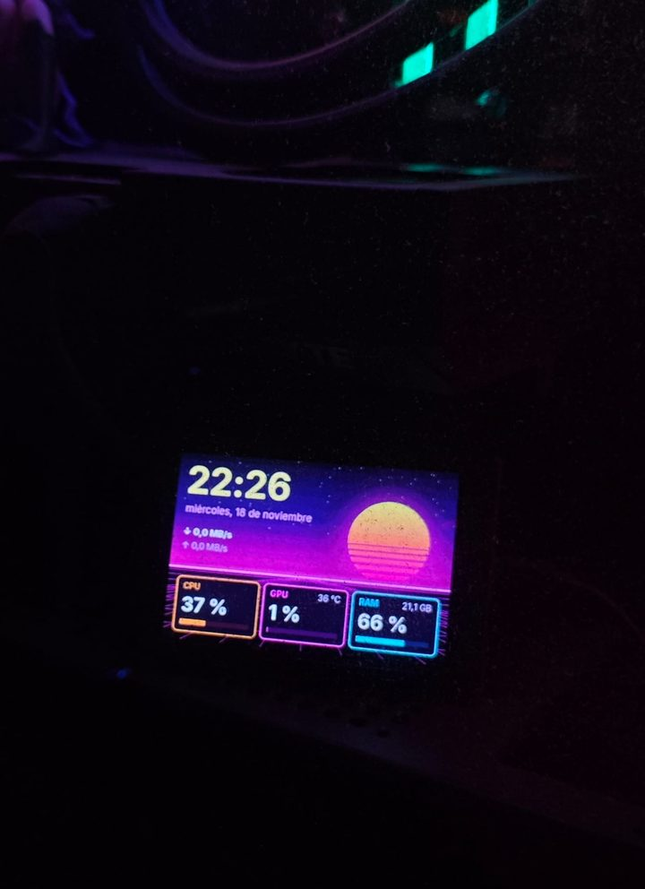

Install it and you're done
It finds the display by itself, no COM ports to pick. It sits next to the Windows clock and starts with your PC if you want.

Luzeira shows your CPU, graphics card, memory, network and the time on Turing Smart Screen–style USB displays. It's free and open source, available in 11 languages, and has no ads or telemetry.
Windows 10 and 11 · no administrator rights · about 20 MB
English, Spanish, German, French, Italian, Brazilian Portuguese, Polish, Turkish, Russian, Simplified Chinese and Japanese. Chinese and Japanese haven't been reviewed by a native speaker yet: if something sounds off, let us know.
It finds the display by itself, no COM ports to pick. It sits next to the Windows clock and starts with your PC if you want.
Hielo, Ámbar, Synthwave, Terminal, Glitch… in landscape and portrait, with large type you can read at a glance.
Drag in clocks, sensors, bars, text and images. What you see is what shows up on the display, because the same engine draws it.
NVIDIA with all its data; AMD and Intel with what Windows provides (usage, memory and, if the card reports it, temperature).
It only sends the display what changes. It uses very little CPU and no network at all.
It doesn't ask for administrator rights, it only connects to the internet if you let it (to tell you about new versions, which are signed), and themes are just data: they never run code.

Live
The Synthwave theme on a 3.5" display inside the PC. Photo taken with a phone, unedited.

It's the same editor as in the app, but here it runs on made-up data with an approximate preview. It doesn't save anything or connect anywhere.
Open the editor full screen (works best on a computer).
| Display | Status |
|---|---|
| Turing Smart Screen 3.5" (revision A) and those that use UsbPCMonitor | Tested |
| XuanFang 3.5" (also “flagship”, revision B) | Beta |
| Kipye Qiye 3.5" | Beta |
| Turing 2.1", 5" and 8.8" (revision C) | Beta |
| WeAct 3.5" and 0.96" | Beta |
“Beta” means it's written to its protocol but nobody has tested it with a real display yet. If you have one, let us know if it works.
The easiest way: from Microsoft Store. It installs in one click, with no Windows warnings, and updates itself.
Or with the installer from GitHub:
Skeptical? Good. Every version is built on GitHub from the public code and comes with its SHA-256 checksums and GitHub's proof of origin (attestation).
Luzeira is free and will stay that way. If you find it useful and want to help it keep improving (more displays, more themes, more sensors…), you can buy me a coffee:
Ko-fi doesn't require signing up: you can pay by card, Apple Pay or Google Pay. If you already have a GitHub account, you can also donate there. Donations are voluntary and don't get you anything in return: Luzeira is the same for everyone.
It also helps a lot to star it on GitHub, report bugs and share it.
Luzeira builds on the work of many people. Thanks to:
The full licenses are included in the installer.